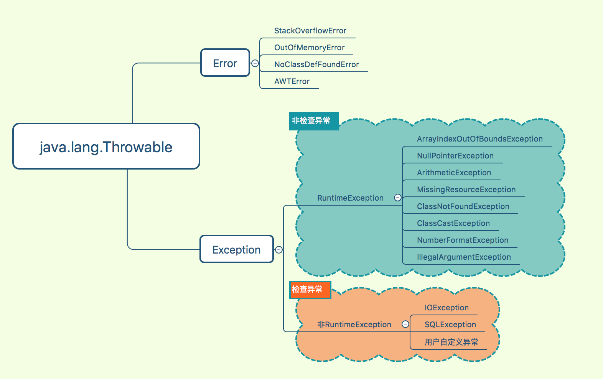

线上发布时,报错如下:
java.lang.NoClassDefFoundError: com/xxxxx/xx/ex/XXLogException
at com.xxxxx.xx.log.DriverTraceAspect.doWriter(DriverTraceAspect.java:113)
at com.xxxxx.xx.log.DriverTraceAspect.doTrace(DriverTraceAspect.java:100)
at com.xxxxx.xx.log.DriverTraceAspect.doAround(DriverTraceAspect.java:74)
at sun.reflect.NativeMethodAccessorImpl.invoke0(Native Method)
at sun.reflect.NativeMethodAccessorImpl.invoke(NativeMethodAccessorImpl.java:62)
at sun.reflect.DelegatingMethodAccessorImpl.invoke(DelegatingMethodAccessorImpl.java:43)
at java.lang.reflect.Method.invoke(Method.java:498)
at org.springframework.aop.aspectj.AbstractAspectJAdvice.invokeAdviceMethodWithGivenArgs(AbstractAspectJAdvice.java:644)
at org.springframework.aop.aspectj.AbstractAspectJAdvice.invokeAdviceMethod(AbstractAspectJAdvice.java:633)
首先来复习下Java中的异常结构图:

Throwable有两个重要的子类:Exception和Error,二者都是Java异常处理的重要子类,各自都包含大量子类:
1. Exception
改异常是应用程序中可能的可预测、可恢复问题.Exception下又分为RuntimeException和非RuntimeException,RuntimeException异常指可能在Java 虚拟机正常运行期间抛出的异常的超类,RuntimException是非检查异常.除了RuntimeException及它的子类外的Exception异常为检查异常.
2. Error
表示运行应用程序中较严重问题.大多数错误与代码编写者执行的操作无关,而表示代码运行时JVM出现的问题,例如,如内存溢出、虚拟机错误、栈溢出等.
上面报错是NoClassDefFoundError异常,属于Error异常,导致该问题是由于应用A依赖B、C,B又依赖C,B中引用最新的C,而A中没有引用最新的C,把A中C改成最新的版本号即可.
该异常和ClassNotFoundException异常咋看起来很像,关于这两种异常比较可以参考文章https://www.jianshu.com/p/93d0db07d2e3